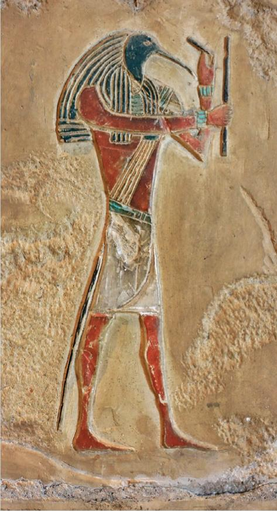
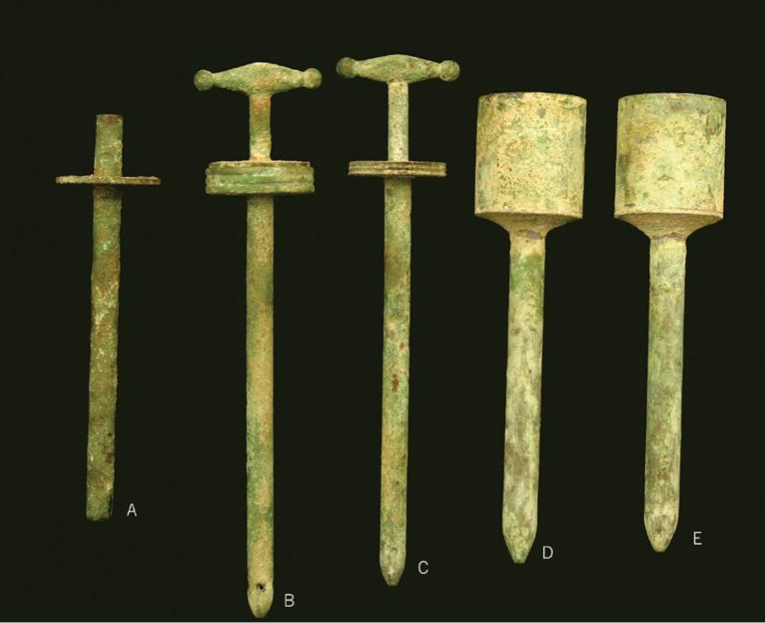
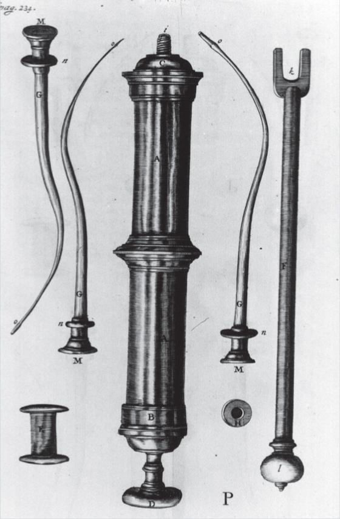
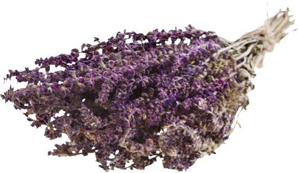
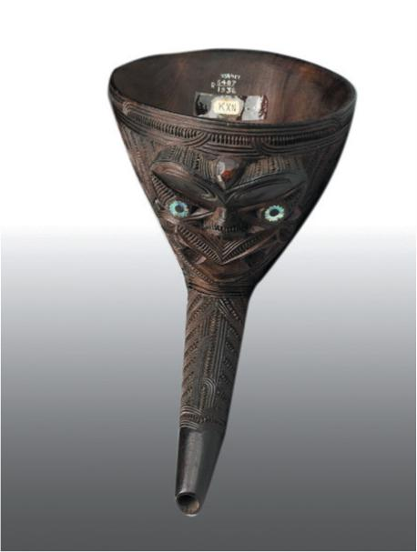
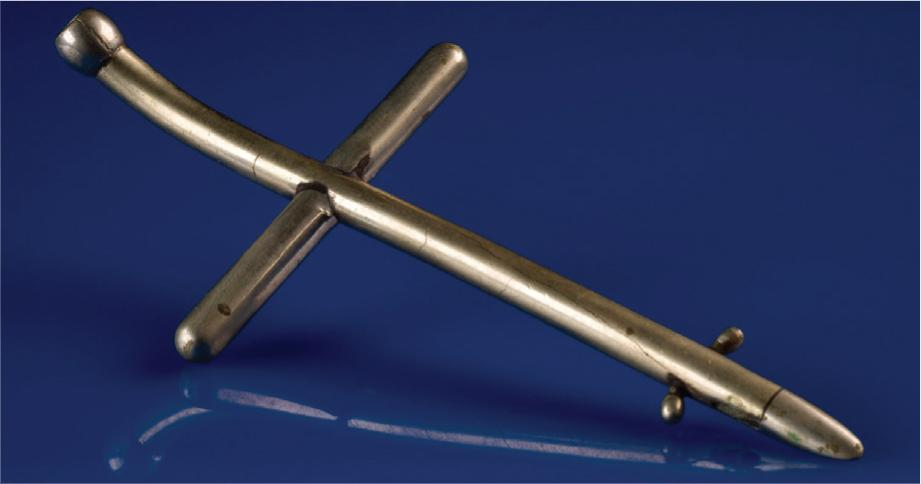
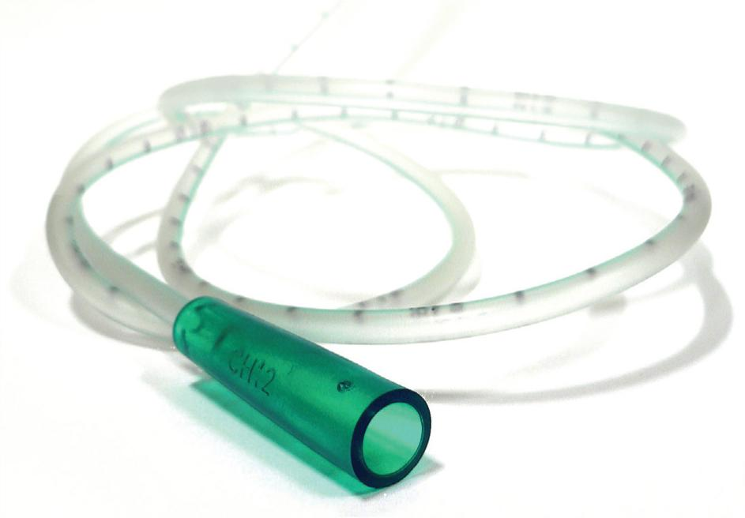
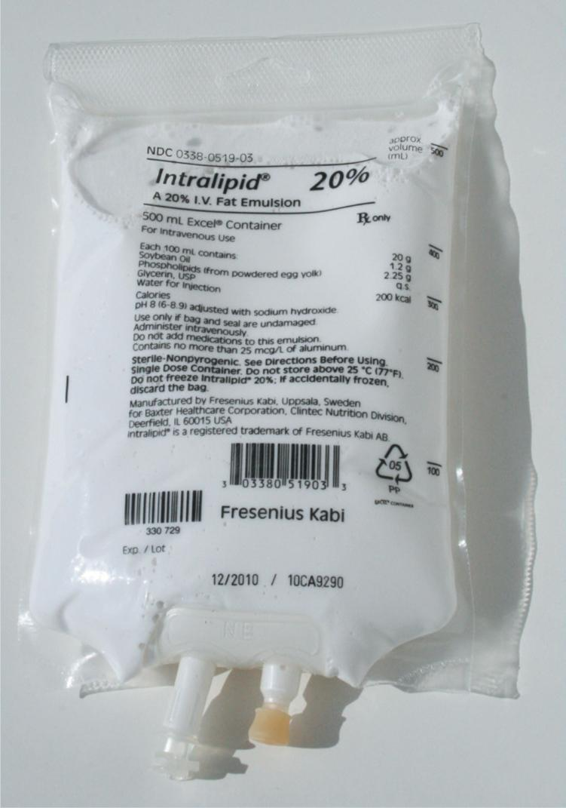
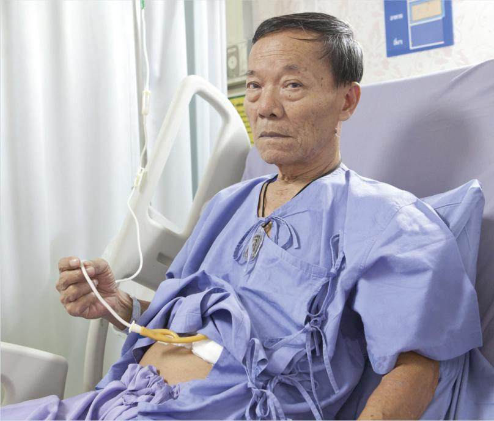
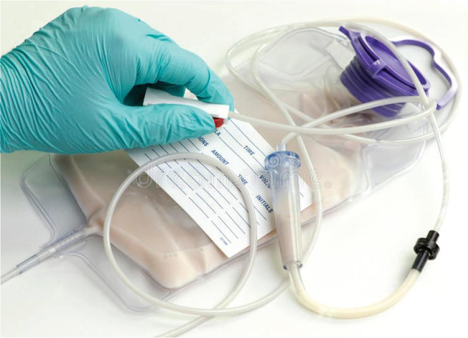

15.1 Historical Introduction
The use of enteral nutrition therapy, or the delivery of a nutritional formula through a tube into the gastrointestinal tract, is not a recent development. In fact, the beginnings of enteral nutrition can be traced back to ancient Egypt and the priest-physicians who practiced a combination of spiritual healing and herbal medicine to cure the illnesses of their fellow citizens.
Ancient Egyptian Medicine
As part of their therapeutic practice, early Egyptian priest-physicians prayed to Thoth to provide healing powers for individuals who were ill. Thoth, the god of wisdom and inventor of medicine, was often depicted on ancient papyruses, hieroglyphics, and other excavated artifacts as having the head of an ibis, a sacred bird in Egypt. The ibis was the guardian of the country, protecting its people from evil forces such as plagues and serpents. In fact, thousands of mummified ibises have been discovered in the tombs of pharaohs.

The symbolism associated with the ibis is rooted in an ancient tale. According to the tale, a group of observers witnessed an ibis taking up water in its curved beak and then inserting its beak into its rectum to cleanse it. This animal’s grooming behavior—the cleansing of the body’s internal environment—was thought by observers to flush out the contagion causing illness or disease.
The group’s observation reflected the culture’s rudimentary knowledge of human anatomy and physiology. Early Egyptians believed that a network of channels existed in the human body and converged into a central location: the rectum. Consequently, early community practitioners would treat a patient by introducing different herbal remedies into the rectum, which—according to their theories—would then channel the fluids to different parts of the body. By instilling nutrient-rich solutions into the rectum, physicians thought that fluid balance within the body could be restored, thus promoting good health.
The solutions that were injected into ill patients were typically a mixture of milk, broth, whey, and wine, and were commonly prescribed to treat gastrointestinal disorders such as dysentery. Administered by practitioners through a hollow reed, animal bone, or horn, these solutions were introduced into the rectum via gravity or by the use of a primitive bulb syringe made from an animal bladder. More than 700 recipes for rectal feedings, or nutrient enemas, were documented in the Ebers Papyrus (1550
Rectal Feedings and Wellness
Another proponent of the use of nutrient enemas was Greek physician Hippocrates. His collection of ancient medical texts, called the Hippocratic Corpus, details his theory that health could be restored or damaged by the consumption or lack of certain foods. Hippocrates understood the impact of nutrition on wellness, and he administered rectal feedings to his patients to treat their diseases, supplement their fluid losses, and improve their overall well-being. His rectal feeding tube consisted of a piece of pipe that was attached to an animal bladder.
Like Hippocrates, well-known 2nd century physician Galen also treated a number of disorders with rectal feedings consisting of water or a salt solution with, perhaps, honey or oil added. Galen would inject the solution into his patients using a crude, syringe-like device called a clyster, similar to the ones shown. The solution would then cleanse the bowel before nutrient-rich substances were instilled. Galen expanded upon the work of his predecessor, Hippocrates, by studying the body’s response to various nutrients and, years later, wrote extensively about his theory that proper nutrition was necessary to maintain balance in the body.

For many centuries after Galen’s research, rectal enemas were used to restore health and meet the nutritional needs of ailing patients, with many physicians extolling the healthful benefits of regular rectal irrigation to remove the body’s toxins. These enemas were administered through a clyster attached to a tube and some type of pump apparatus. Ironically, colon hydrotherapy became somewhat of a status symbol among the affluent during the 17th century. To maintain wellness and personal hygiene, socialites kept a collection of well-appointed clysters and hired a personal attendant to administer these rectal enemas—sometimes four or five times a day.

However, for those who were critically ill, administering nutrient-rich fluids through the rectum proved to be minimally effective. Although the lining of the colon is designed to absorb water during the digestive process, it is not meant to absorb nutrients, whose stores are severely depleted during illness, disease, surgery, or trauma. The theory that rectal feedings cannot sustain life was exemplified by the post-assassination attempt treatment administered to 19th century US president James Garfield, who was shot twice by an assailant. He was kept alive for 79 days on a rectal solution of beef broth, egg yolks, milk, whiskey, and opium before wasting away from his injuries.
Beginnings of Parenteral Nutrition
In the 12th century, Muslim physician and surgeon Ibn Zuhr (commonly known as Avenzoar) was the first practitioner to attempt parenteral nutrition (PN). To treat patients whose conditions precluded the ingestion of foods, Avenzoar recommended three methods of providing food: soaking the individual in tepid bathwater that contains crushed herbs, grains, and flowers; administering liquid nutrients by way of an enema; or, on more desperate occasions, injecting liquid feedings directly into the individual’s stomach. Although these first recorded efforts of PN therapy were unsuccessful, Avenzoar’s experiments, as well as those of other practitioners during this time period, paved the way for finding ways to feed malnourished patients who were too ill to eat.

Gastric Feeding Tubes
By the 16th and 17th centuries, gastric feedings became a common treatment modality for patients who were unable to chew, swallow, or digest foods. Both orogastric (through the mouth) and nasogastric (through the nose) tube apparatuses were constructed from animal bladders and animal bones covered with eel skin. Aside from animal bones, gastric tubes were also fashioned from flexible leather and malleable metals. The slippery, hollow bone was inserted either through the patient’s mouth or nose and then threaded down the esophagus.
A typical feeding solution was comprised of jelly, milk, eggs, sugar, broths, and wine. This fluid was placed into an animal bladder and then pumped through the hollow bone and into the patient’s stomach.
Scottish surgeon and anatomist John Hunter is credited with successfully providing the first nasogastric (NG) feeding in 1790 to a stroke victim left paralyzed and unable to consume food. A skilled anatomist, Hunter maneuvered the eel skin/bone device down the esophagus of the patient and conducted tube feedings for five weeks.
Feeding funnels were also employed in gastric feeding. These funnels were often used for patients after surgery or in those individuals who suffered a traumatic injury to the head or neck, impeding the intake of food. Other funnels, such as the one pictured, were used to feed patients who were unable to chew or swallow due to cultural rituals, such as tattooing of the face. Regardless of the circumstances, the funnel was attached to a flexible tube that was inserted in the patient’s mouth. The feeding solution was poured into the funnel and then traveled down the tube into the patient’s stomach.

In the 19th century, NG tubes were used to administer gastric feedings. Several physicians prescribed gastric feedings for children who were diagnosed with diphtheria or croup. The feedings consisted of a variety of ingredients, including eggs, warm milk, beef tea, and even brandy and stimulants. Surprisingly, one physician suggested gastric feedings for “spoilt children, who, when ill, refuse food.”
This concept of force feeding was also implemented in patients who suffered from mental disorders and, therefore, refused food, or those patients who had difficulty opening their mouths (due to tetanus) or swallowing (due to esophageal stricture). For these patients, an instrument, such as the feeding tube pictured, was inserted into the mouth so that the crossbars held the mouth open. The feeding solution was then poured down the tube and into the stomach.

Innovations in Enteral Feedings
By the start of the 20th century, innovations in supplies, such as the introduction of the Levin tube in 1921, made nutrient delivery to patients easier. The Levin tube—a flexible, rubber NG tube—was invented by US physician Abraham Levin to remove gastric contents from the gut (gastric decompression) after a laparotomy. The hollow tube connects to suction, allowing the drainage of gastric contents into a receptacle. The Levin tube continues to be used today for gastrointestinal feeding and aspiration, only now the tube is made from lightweight polyurethane material.

In 1937, Robert Elman and D.O. Weiner, two US physicians, experimented with intravenous (IV) feeding of protein hydrolysates (an amino acid mixture) to five patients who could not digest protein, a substance responsible for the growth and repair of cells and tissues. Two of their patients had intestinal obstruction, and three patients had stomach cancer. Although the patient results were favorable, additional research was necessary for two reasons: The large volumes of solution needed to deliver the necessary caloric intake made the procedure difficult, and the use of a peripheral access site created local complications from the infusion. Still, their report in The Journal of the American Medical Association opened up the possibility of using an IV route to deliver nutritional therapy.
The Emergence of PN Therapy
By the 1940s, standard treatment of seriously ill or injured patients included the administration of IV medications. One of these medications was an amino acid mixture created by Merck and Co., Inc., a pharmaceutical company, to supplement the body’s protein synthesis process. With the outbreak of World War II, this product was in high demand by physicians who sought ways to provide the rapid healing properties of protein to injured soldiers. The success of this amino acid supplement in maintaining the weight and nitrogen balance of these patients over an extended recovery period confirmed Elman’s and Weiner’s research that PN therapy could sustain life.
During this same period, a breakthrough in the delivery of nutritional feedings occurred. Dr. Jonathan Rhoads, a prominent surgeon at the Hospital of the University of Pennsylvania, conducted studies to identify appropriate feeding solutions and delivery methods for malnourished patients who had undergone gastroenterostomies. After researching the positive effects of IV nutrient feedings on the development of puppies, Rhoads and his colleagues, Dr. Stanley Dudrick and Dr. Harry Vars, determined that 5 liters of dextrose 10% in water mixed with protein hydrolysates could deliver a sufficient number of calories to treat patients who were unable to eat.
Rhoads faced two major complications with this experimental treatment: The infusion of a large volume of feeding solution resulted in fluid overload and pulmonary edema for the patient, and the infusion of a more concentrated formula led to thrombosis of the patient’s peripheral veins used in the fluid administration. Rhoads and his colleagues found that they could use a more concentrated formula if they delivered the IV feedings through a catheter placed in a larger vein such as the superior vena cava.
In 1966, Rhoads published his research on the subclavian administration of PN therapy, which he called hyperalimentation (or “hyperal”). In this method, a central venous catheter (CVC) is surgically inserted into the subclavian vein. The nutrient-rich solution is then safely administered through the CVC to the patient, virtually eliminating the problem of phlebitis or other injury to the smaller and more fragile peripheral vein. Rhoads’ discovery laid the foundation for modern-day PN therapy that provides nutritional support for patients who require a long-term alternative to enteral feeding.
Changes in Nutritional Solution Formulas and Administration
By the 1960s, advances in nutritional formulas made IV feedings commonplace in the healthcare setting. In addition to replacing proteins and carbohydrates, lipids became part of the PN formula in 1962 with the discovery of the first intravenous fat emulsion by Swedish professor Arvid Wretlind. Wretlind combined egg phospholipids, glycerin, and soybean oil. By the end of the decade, hospital pharmacies started to compound IV solutions of sterile water, dextrose, amino acids, and lipids, as well as an assortment of electrolytes, vitamins, and minerals, thus establishing modern-day PN therapy.

Changes also occurred in the administration of tube feedings. Now, in addition to the use of an NG tube and a CVC catheter, a gastrostomy (G) tube and jejunum (J) tube allowed access to the stomach through a surgical opening made in the skin of the abdomen. The liquid nutritional feedings could then be injected or infused into the tube and deposited into the stomach.

Options for Delivery of Nutritional Solutions
In the late 1960s, home therapy also became an option for patients who were discharged but in need of continued nutritional support. These patients took home the hospital supplies and powdered formulas that they needed to mix and subsequently administer their own enteral tube-feeding solutions—a lengthy procedure for these amateur “pharmacists.”
Today, many patients self-administer both PN solutions and enteral tube feedings but no longer need to mix the solutions themselves. Some manufacturers of nutrient solutions now provide premixed bags and portable administration pumps that allow patients the freedom of mobility during administration. Patients and their caregivers are provided training and are monitored closely by a team of healthcare professionals.
Still, many patients who receive PN and enteral solutions—whether at home or in a healthcare facility—rely on sterile preparations compounded by sterile compounding personnel.
Ongoing Research into PN Therapy
Scientists continue to conduct research to refine the components and delivery methods of PN therapy in order to improve nutritional balance, efficacy, and patient safety. One innovation in PN components is the energy-dense lipid emulsion, which was introduced by Baxter International Inc. Lipids used in PN are an intravenous fat emulsion made from one or more types of oil that may include soybean, safflower, or olive oil. Lipid emulsions provide an excellent source of calories and essential fatty acids. Other research avenues include investigating the use of fish oil in lipid emulsion, identifying optimal dosages of nutritional components based on a patient’s disease state, expanding use of premixed all-in-one PN products to decrease PN-related error and infection rates, and addressing PN supply shortages.
